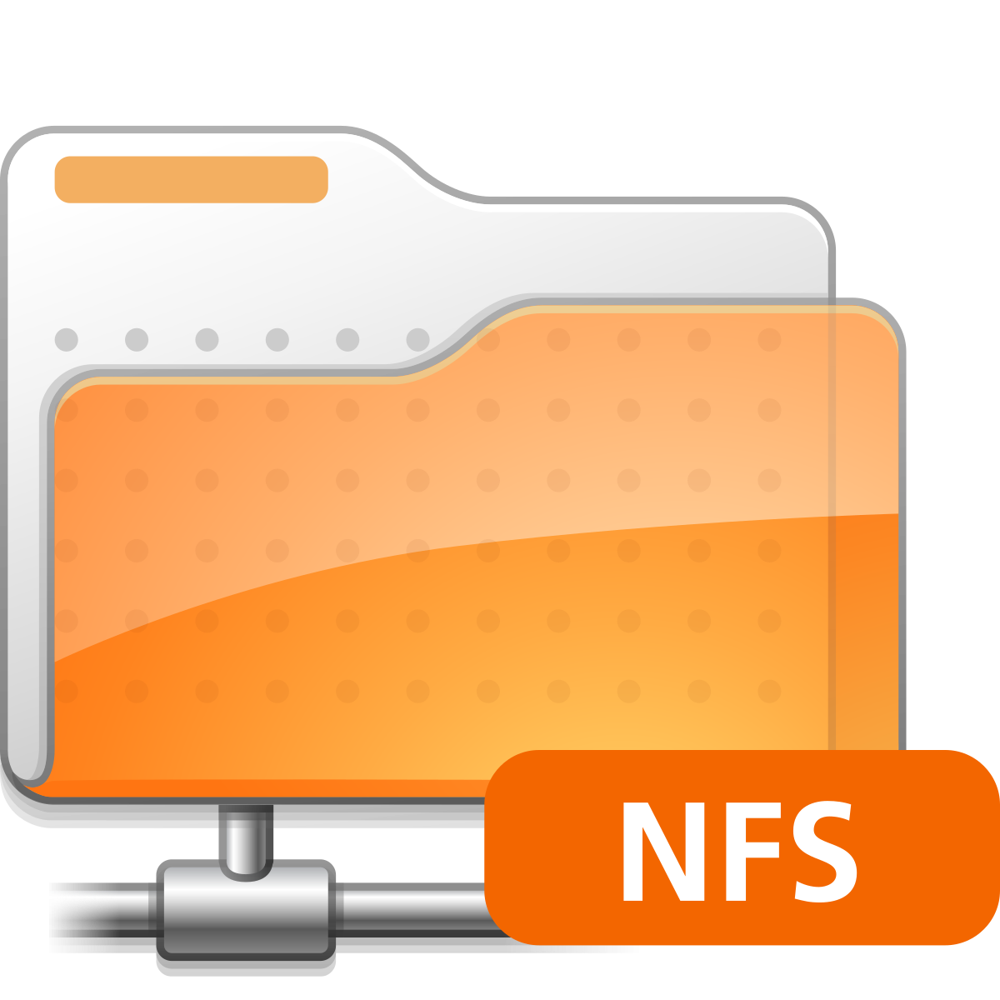

Complete Windows Troubleshooting Guide & Tools
In this article, you will learn how to diagnose and solve common Windows issues using free and built-in tools like HWiNFO64, CrystalDiskInfo, BatteryView, DISM, and more.
Discover step-by-step methods to fix errors, monitor hardware, optimize performance, and keep your system healthy.
How to install and configure Ubuntu Desktop.
In this article, I will teach you how to install and configure Ubuntu Desktop.
You will learn how to set up your system, configure updates, and personalize your desktop environment.
This is how I install and configure an Ubuntu server.

I will teach you how to set up an Ubuntu server.
I will show you how I configure updates, time, and SSH.
This is a good starting point for your first home lab. From there, you can start building higher.
How to install Pi-hole with Unbound.

In these articles, I will teach you how to set up an Ubuntu server with
Pi-hole and Unbound.
The benefits are that you will have an ad blocker for your whole home network and your own DNS server with DNSSEC,
thanks to Unbound and Pi-hole. This will improve your privacy and speed up your local network.
How to set up NFS on Ubuntu server.


Here I will teach you how you can host your own file server, also known as
NFS, and how you
can install Ubuntu server.